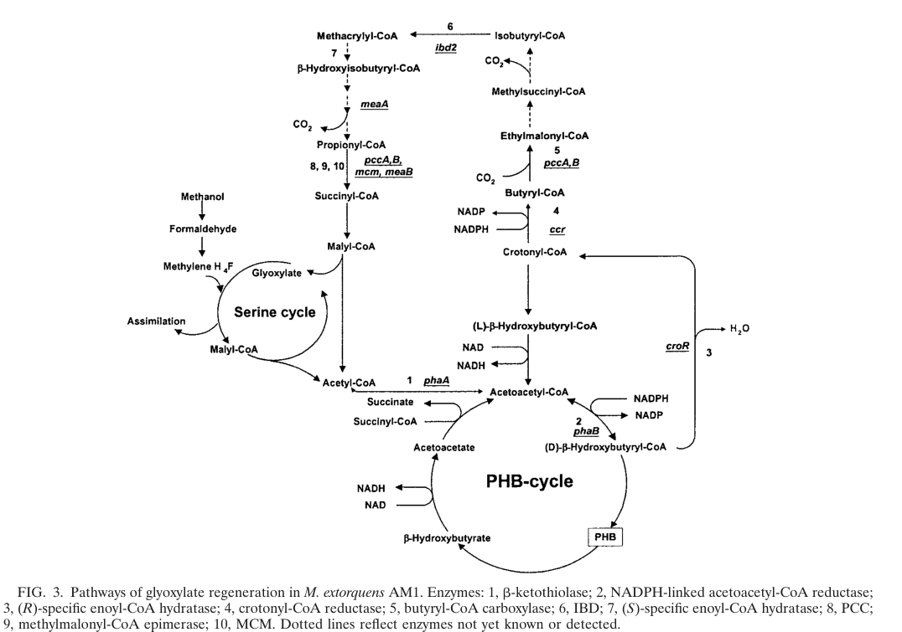

hprA encodes hydroxypyruvate reductase (HPR; also named glycerate dehydrogenase, GDH, or HPR-A), a NAD(P)H-dependent oxidoreductase (EC 1.1.1.29) that plays a central role in the serine cycle of methylotrophy. The enzyme catalyzes the reversible reduction of 3-hydroxypyruvate (formed by transamination of serine and glyoxylate) to D-glycerate, the step that pulls C1-derived carbon into the glycerate / 2-phosphoglycerate / PEP segment of central metabolism during formaldehyde assimilation. Genetic evidence in M. extorquens AM1 and the closely related strain PA1 shows hprA is required for growth on C1 substrates; deletion of hprA causes complete abolition of growth on methanol, while multi-carbon growth is largely unaffected, marking HprA as a serine-cycle commitment/control point rather than a general essential enzyme. HprA can utilize both NADH and NADPH as electron donors and functions as a homodimer in the cytoplasm. Beyond its role in the serine cycle, HprA may also participate in C2 metabolism by interconverting glyoxylate and glycolate (glyoxylate reductase activity). The enzyme belongs to the D-isomer specific 2-hydroxyacid dehydrogenase family and contains NAD(P)-binding Rossmann-fold domains. HprA has been characterized biochemically, with protein sequencing and mutagenesis studies confirming its function as a key enzyme in formaldehyde assimilation via the serine pathway.
| GO Term | Evidence | Action | Reason |
|---|---|---|---|
|
GO:0005737
cytoplasm
|
IEA
GO_REF:0000044 |
ACCEPT |
Summary: HprA is localized in the cytoplasm where it functions as a soluble enzyme in the serine cycle. This is consistent with the other serine cycle enzymes, which act on cytosolic intermediates (hydroxypyruvate and glycerate), in contrast to periplasmic methanol oxidation. Deep research supports a cytosolic assignment as an inference from pathway context.
Supporting Evidence:
file:METEA/hprA/hprA-uniprot.txt
SUBCELLULAR LOCATION: Cytoplasm
file:METEA/hprA/hprA-deep-research-falcon.md
this supports (as an inference) that HprA functions in the **cytosolic** compartment of central metabolism rather than the periplasm
|
|
GO:0008465
hydroxypyruvate reductase (NADH) activity
|
IEA
GO_REF:0000120 |
ACCEPT |
Summary: This is the primary and experimentally characterized catalytic activity of HprA. The enzyme reduces hydroxypyruvate to glycerate using NADH (and can also use NADPH), the second step of the serine cycle. Deletion of hprA abolishes methanol growth, confirming this is the core catalytic function relevant to C1 assimilation. Characterized biochemically with protein purification and mutagenesis.
Supporting Evidence:
file:METEA/hprA/hprA-uniprot.txt
Reaction=(R)-glycerate + NAD(+) = 3-hydroxypyruvate + NADH + H(+)
file:METEA/hprA/hprA-deep-research-falcon.md
hprA encodes hydroxypyruvate reductase (HPR) in the native serine cycle
file:METEA/hprA/hprA-deep-research-falcon.md
hydroxypyruvate is then converted to glycerate via hydroxypyruvate reductase
|
|
GO:0016491
oxidoreductase activity
|
IEA
GO_REF:0000043 |
KEEP AS NON CORE |
Summary: This is a general parent term that is correct but not informative. The more specific terms GO:0008465 and GO:0016616 provide better functional annotation.
|
|
GO:0016616
oxidoreductase activity, acting on the CH-OH group of donors, NAD or NADP as acceptor
|
IEA
GO_REF:0000120 |
ACCEPT |
Summary: This accurately describes the enzymatic mechanism - HprA acts on the carbonyl group of hydroxypyruvate (which is in equilibrium with its hydrated gem-diol form having CH-OH groups) using NAD or NADP as electron acceptor. The enzyme uses both NAD and NADP.
Supporting Evidence:
file:METEA/hprA/hprA-uniprot.txt
Uses both NAD and NADP
|
|
GO:0051287
NAD binding
|
IEA
GO_REF:0000002 |
ACCEPT |
Summary: HprA requires NAD(P) as a cofactor and contains NAD(P)-binding Rossmann-fold domains for cofactor binding. This is a valid supporting molecular function consistent with membership in the D-isomer specific 2-hydroxyacid dehydrogenase family.
Supporting Evidence:
file:METEA/hprA/hprA-uniprot.txt
NAD(P)-binding Rossmann-like Domain
|
Q: What are the kinetic constants (Km, kcat) of HprA for hydroxypyruvate versus glyoxylate, and what is its cofactor preference (NADH vs NADPH)?
Experiment: Measure the relative specific activity and steady-state kinetics of purified recombinant HprA on hydroxypyruvate and glyoxylate with NADH and NADPH to quantify substrate and cofactor preference.
The research report should be a detailed narrative explaining the function, biological processes, and localization of the gene product. Citations should be given for all claims.
You should prioritize authoritative reviews and primary scientific literature when conducting research. You can supplement
this with annotations you find in gene/protein databases, but these can be outdated or inaccurate.
We are specifically interested in the primary function of the gene - for enzymes, what reaction is catalyzed, and what is the substrate specificity? For transporters, what is the substrate? For structural proteins or adapters, what is the broader structural role? For signaling molecules, what is the role in the pathway.
We are interested in where in or outside the cell the gene product carries out its function.
We are also interested in the signaling or biochemical pathways in which the gene functions. We are less interested in broad pleiotropic effects, except where these elucidate the precise role.
Include evidence where possible. We are interested in both experimental evidence as well as inference from structure, evolution, or bioinformatic analysis. Precise studies should be prioritized over high-throughput, where available.
The UniProt accession Q59516 corresponds to hprA, encoding a hydroxypyruvate reductase (HPR; also described as glycerate dehydrogenase/glyoxylate reductase; EC 1.1.1.29) in Methylorubrum extorquens strain AM1. In AM1 and closely related strains, HprA is a core enzyme of the serine cycle for C1 assimilation, catalyzing the reduction of hydroxypyruvate to glycerate; genetically, hprA is required for methylotrophic growth, with deletion causing no growth on methanol. (zhang2024phosphoribosylpyrophosphatesynthetaseas pages 1-2, good2015metaboliccontrolof pages 13-20, chistoserdova1994geneticsofthe pages 1-2)
In the AM1 literature, hprA is explicitly used to denote hydroxypyruvate reductase within the serine-cycle gene set. A 2003 genomic mini-review of methylotrophy in AM1 describes a hydroxypyruvate reductase gene that was cloned and mutagenized, and lists hpr among serine-cycle genes, consistent with the UniProt functional description. (chistoserdova2003methylotrophyinmethylobacterium pages 6-7, chistoserdova2003methylotrophyinmethylobacterium pages 6-6)
A recent 2024 Nature Communications study explicitly states that hprA encodes hydroxypyruvate reductase (HPR) in the native serine cycle, and uses ΔhprA to disable the serine-cycle route, confirming gene identity in the correct organism background (AM1). (zhang2024phosphoribosylpyrophosphatesynthetaseas pages 1-2)
All key evidence cited here refers to Methylorubrum extorquens AM1 (synonym: Methylobacterium extorquens AM1), matching the UniProt-specified organism context. (zhang2024phosphoribosylpyrophosphatesynthetaseas pages 1-2, chistoserdova2003methylotrophyinmethylobacterium pages 6-7)
M. extorquens AM1 is a model facultative methylotroph that assimilates formaldehyde through the serine cycle, a pathway that incorporates C1-derived methylene-tetrahydrofolate into biomass via amino-acid and C3 intermediates. (good2015metaboliccontrolof pages 13-20)
Within this cycle, serine and glyoxylate are transaminated to generate hydroxypyruvate and glycine; hydroxypyruvate is then converted to glycerate via hydroxypyruvate reductase (Hpr/HprA). Glycerate is phosphorylated to 2-phosphoglycerate and continues through central metabolism to regenerate key acceptors and supply biosynthetic precursors. (good2015metaboliccontrolof pages 13-20)
Because continued serine-cycle flux requires regeneration of glyoxylate, AM1 uses a glyoxylate-regeneration strategy linked to C2 metabolism and the EMC pathway. A foundational study mapped routes of glyoxylate regeneration in AM1 (including mutant phenotypes for multiple genes in this module), and a genomic mini-review emphasizes that glyoxylate regeneration is intertwined with other modules such as PHB metabolism and portions of the TCA cycle. (korotkova2002glyoxylateregenerationpathway pages 3-5, chistoserdova2003methylotrophyinmethylobacterium pages 6-7)
A pathway diagram of glyoxylate regeneration in AM1 is shown in Korotkova et al. 2002 (Figure 3), illustrating the network context in which serine-cycle metabolism (upstream of glyoxylate demand) is balanced by glyoxylate-regeneration routes. (korotkova2002glyoxylateregenerationpathway media 023f8d72)
In AM1 pathway descriptions, hydroxypyruvate reductase (Hpr; encoded by hprA) catalyzes the conversion of hydroxypyruvate to glycerate as part of the serine cycle. (good2015metaboliccontrolof pages 13-20)
The UniProt entry provided by the user indicates alternative names consistent with glyoxylate reductase/hydroxypyruvate reductase activity and classifies the protein in a D-isomer–specific 2-hydroxyacid dehydrogenase family. However, within the retrieved full-text evidence set here, explicit cofactor specificity (NADH vs NADPH), kinetic parameters (Km/kcat), and experimentally measured relative activities on hydroxypyruvate vs glyoxylate were not extractable.
The 2003 mini-review notes that hydroxypyruvate reductase was purified/characterized and that the gene was cloned/mutagenized in earlier work, implying those details exist in primary biochemical papers; however, those specific biochemical constants are not present in the accessible excerpts used for this report. (chistoserdova2003methylotrophyinmethylobacterium pages 6-7, chistoserdova1994geneticsofthe pages 4-4, good2015metaboliccontrolof pages 89-92)
A 2024 Nature Communications study reports that deleting hprA in AM1 (to remove the serine-cycle HPR function) caused complete abolition of growth on methanol. (zhang2024phosphoribosylpyrophosphatesynthetaseas pages 1-2)
This modern result is consistent with earlier serine-cycle genetics summaries indicating that mutations in identified serine-cycle genes confirm their requirement for serine-cycle function. (chistoserdova1994geneticsofthe pages 1-2)
In the same 2024 work, adaptive laboratory evolution (ALE) of the engineered AM1 background identified activation of a hypothetical protein (META1_3141) that partially fulfilled the function of HPR in evolved strains; the complementary activity was supported by an in vitro enzymatic assay (details referenced in the article’s supplementary materials). This provides a contemporary example of functional redundancy/evolvability around the hydroxypyruvate-to-glycerate node. (zhang2024phosphoribosylpyrophosphatesynthetaseas pages 1-2)
In M. extorquens PA1, ΔhprA abolished growth on C1 substrates but left growth on multi-carbon substrates largely unaffected, supporting the view that HprA is specifically required for C1 assimilation via the serine cycle rather than for general heterotrophic growth. (nayak2014physiologyandevolution pages 39-44)
Direct experimental statements in the retrieved excerpts about HprA cellular localization (cytosolic vs periplasmic) were not found. (zhang2024phosphoribosylpyrophosphatesynthetaseas pages 1-2)
Nevertheless, the serine-cycle context described in AM1 places Hpr/HprA among enzymes acting on cytosolic intermediates (hydroxypyruvate and glycerate), while methanol oxidation by methanol dehydrogenase is described as occurring in the periplasmic space; this supports (as an inference) that HprA functions in the cytosolic compartment of central metabolism rather than the periplasm. (zhang2024phosphoribosylpyrophosphatesynthetaseas pages 1-2, good2015metaboliccontrolof pages 13-20)
Zhang et al. (published July 2024; received Nov 2023) studied Methylorubrum extorquens AM1 in the context of phyllosphere colonization and plant growth promotion, focusing on optimizing growth under low methanol typical of leaf surfaces. They explicitly leveraged ΔhprA to block the native serine cycle (abolishing methanol growth), then used ALE and systems measurements to identify compensatory mechanisms and improved low-methanol fitness. (zhang2024phosphoribosylpyrophosphatesynthetaseas pages 1-2)
This positions hprA as not only a canonical methylotrophy gene but also a practical genetic “handle” used in modern studies to re-route C1 assimilation strategies. (zhang2024phosphoribosylpyrophosphatesynthetaseas pages 1-2)
A 2024 mSystems pangenomic analysis across type II methylotrophs reports ubiquitous presence of hydroxypyruvate reductase (HPR) among organisms including Methylobacterium extorquens, consistent with HprA representing a conserved enzyme in serine-cycle methylotrophy. (samanta2024fromgenometo pages 10-12)
The 2024 Nature Communications paper frames Methylobacterium/Methylorubrum as common phyllosphere microbes with documented abilities to enhance plant growth and yield (e.g., phytohormone-related traits, ACC deaminase, nitrogen fixation) and states that their findings could guide strain selection for agricultural applications. While these traits are not specific to hprA alone, hprA-dependent methanol assimilation capacity is central to the organism’s ecological niche on plant methanol emissions. (zhang2024phosphoribosylpyrophosphatesynthetaseas pages 1-2)
A systems-level overview of AM1 metabolism notes that methylotrophic growth involves high flux through toxic intermediates (formaldehyde, glyoxylate/glycine) and that AM1 methylotrophy can yield intermediates of potential commercial value (e.g., ethylmalonyl-CoA–pathway intermediates). HprA’s role in serine-cycle flux supports these capabilities by enabling efficient C1 assimilation into central carbon metabolism. (good2015metaboliccontrolof pages 13-20)
Zhang et al. (2024) report an estimated ~100 Tg annual methanol emission, and emphasize that plant-derived methanol concentrations in the phyllosphere vary diurnally from trace levels to tens of millimoles. (zhang2024phosphoribosylpyrophosphatesynthetaseas pages 1-2)
In Zhang et al. (2024), “standard” cultivation used ~120 mM methanol, and “growth-limiting” conditions were ≤15 mM methanol. Experiments tested 15, 10, 5, 1.2, and 0.5 mM methanol to mimic the phyllosphere. (zhang2024phosphoribosylpyrophosphatesynthetaseas pages 1-2, zhang2024phosphoribosylpyrophosphatesynthetaseas pages 3-5)
Although these quantitative improvements are not attributed to hprA directly (they involve a prs allele), they provide modern benchmarks for AM1 physiology under low methanol:
- Lag phase shortened by 1–2.5 h.
- Maximum OD600 increased 7.0–26.7% across 0.5–15 mM methanol.
- Biomass yields increased 11.0% at 10 mM methanol and 8.3% at 15 mM methanol (growth rate unchanged vs wild type at low methanol). (zhang2024phosphoribosylpyrophosphatesynthetaseas pages 3-5)
The strongest quantitative statement about hprA in the recent AM1 literature captured here is categorical: ΔhprA yields complete abolition of growth on methanol. (zhang2024phosphoribosylpyrophosphatesynthetaseas pages 1-2)
Across decades of AM1 research, hprA/HprA is best interpreted as a commitment step maintaining serine-cycle continuity by pulling hydroxypyruvate into the glycerate/2-phosphoglycerate/PEP segment of central metabolism. This provides metabolic continuity linking amino-acid interconversions (serine/glycine/glyoxylate) to glycolytic intermediates and downstream carboxylation/CoA-ligation steps. (good2015metaboliccontrolof pages 13-20)
The 2024 AM1 work demonstrates that removing hprA provides a clean knockout that eliminates methylotrophic growth, creating strong selection pressure for alternative routes and enabling discovery of compensatory enzymes (e.g., META1_3141). This indicates that the hydroxypyruvate→glycerate conversion is a high-control point for serine-cycle flux and thus a strategic intervention target in synthetic rewiring of C1 assimilation. (zhang2024phosphoribosylpyrophosphatesynthetaseas pages 1-2)
Despite clear genetic/physiological evidence for function, the following details could not be directly extracted from accessible full text in this run:
- Cofactor preference (NADH vs NADPH) and any dual specificity (hydroxypyruvate vs glyoxylate) with kinetic constants.
- Oligomeric state and detailed biochemical mechanism.
- Direct experimental localization.
The 2003 AM1 mini-review explicitly points to earlier work on purification/characterization and cloning/mutagenesis of hydroxypyruvate reductase in AM1, which are likely to contain these biochemical parameters, but those papers were not available in the current retrieval set. (chistoserdova2003methylotrophyinmethylobacterium pages 6-7)
| Claim | Evidence summary | Source (author year) | URL |
|---|---|---|---|
| hprA (UniProt Q59516) annotation matches hydroxypyruvate reductase / glycerate dehydrogenase activity (EC 1.1.1.29) in Methylorubrum extorquens AM1 | AM1 literature explicitly names hprA as the hydroxypyruvate reductase gene in the serine-cycle gene set; later work states deletion of hprA removes the native HPR function required for methanol growth, consistent with the UniProt annotation for glycerate dehydrogenase / hydroxypyruvate reductase. Direct kinetic/cofactor detail was not present in the retrieved excerpts. (chistoserdova2003methylotrophyinmethylobacterium pages 6-7, chistoserdova1994geneticsofthe pages 4-4, chistoserdova1994geneticsofthe pages 1-2, zhang2024phosphoribosylpyrophosphatesynthetaseas pages 1-2) | Chistoserdova et al. 2003; Chistoserdova & Lidstrom 1994; Zhang et al. 2024 | https://doi.org/10.1128/jb.185.10.2980-2987.2003; https://doi.org/10.1128/jb.176.21.6759-6762.1994; https://doi.org/10.1038/s41467-024-50342-9 |
| Primary pathway role: HprA catalyzes the serine-cycle step hydroxypyruvate → glycerate | AM1 pathway descriptions state that serine and glyoxylate are transaminated to hydroxypyruvate and glycine, and hydroxypyruvate is then converted to glycerate via hydroxypyruvate reductase (Hpr); pathway diagrams place hydroxypyruvate and glycerate adjacent in the serine cycle. (good2015metaboliccontrolof pages 13-20, chistoserdova1994geneticsofthe pages 1-2) | Good 2015; Chistoserdova & Lidstrom 1994 | Not available for thesis excerpt; https://doi.org/10.1128/jb.176.21.6759-6762.1994 |
| hprA is required for C1 growth in AM1 | Recent AM1 engineering work deleted hprA, described as encoding native serine-cycle HPR, and reported complete abolition of growth on methanol. Earlier serine-cycle genetics also stated mutations in identified serine-cycle genes confirmed their requirement for the cycle. (zhang2024phosphoribosylpyrophosphatesynthetaseas pages 1-2, chistoserdova1994geneticsofthe pages 1-2) | Zhang et al. 2024; Chistoserdova & Lidstrom 1994 | https://doi.org/10.1038/s41467-024-50342-9; https://doi.org/10.1128/jb.176.21.6759-6762.1994 |
| Closely related strain evidence supports a broader C1-assimilation-essential phenotype | In M. extorquens PA1, ΔhprA abolished growth on all C1 substrates while retaining wild-type-like growth on multi-carbon substrates, reinforcing that HprA is a specific serine-cycle assimilation enzyme rather than a general essential enzyme. This is supportive but from PA1, not AM1. (nayak2014physiologyandevolution pages 39-44) | Nayak 2014 | http://nrs.harvard.edu/urn-3:HUL.InstRepos:13065009 |
| Link to glyoxylate regeneration and EMC pathway | The serine cycle requires regeneration of glyoxylate for continued C1 assimilation; AM1 reviews and pathway summaries place Hpr/HprA in the serine cycle that feeds into malyl-CoA cleavage to produce glyoxylate and acetyl-CoA, while glyoxylate is replenished through the glyoxylate-regeneration route / EMC pathway. Thus HprA is functionally upstream of glyoxylate regeneration demands rather than an EMC enzyme itself. (chistoserdova2003methylotrophyinmethylobacterium pages 6-6, chistoserdova2003methylotrophyinmethylobacterium pages 6-7, good2015metaboliccontrolof pages 13-20, korotkova2002glyoxylateregenerationpathway media 023f8d72) | Chistoserdova et al. 2003; Korotkova et al. 2002; Good 2015 | https://doi.org/10.1128/jb.185.10.2980-2987.2003; https://doi.org/10.1128/jb.184.6.1750-1758.2002 |
| Quantitative context from the 2024 AM1 study | The 2024 study used ~120 mM methanol as standard cultivation conditions and defined 15 mM or less as growth-limiting. In strains carrying a PRS mutation (not an hprA effect per se), maximum OD600 increased by 7.0–26.7% across 0.5–15 mM methanol, and biomass yields increased by 11.0% and 8.3% at 10 mM and 15 mM methanol, respectively. These numbers provide recent physiological context for AM1 methanol growth but are not direct quantitative measurements of HprA activity. (zhang2024phosphoribosylpyrophosphatesynthetaseas pages 1-2, zhang2024phosphoribosylpyrophosphatesynthetaseas pages 3-5) | Zhang et al. 2024 | https://doi.org/10.1038/s41467-024-50342-9 |
| No quantitative HprA biochemistry was recoverable from the retrieved sources | The retrieved excerpts did not provide HprA kinetic constants, substrate preference between hydroxypyruvate vs glyoxylate, cofactor specificity (NADH/NADPH), or experimentally demonstrated subcellular localization. Reviews point to older primary papers on purification and mutagenesis, but those details were not present in the accessible excerpts here. (chistoserdova2003methylotrophyinmethylobacterium pages 6-7, zhang2024phosphoribosylpyrophosphatesynthetaseas pages 1-2, good2015metaboliccontrolof pages 89-92) | Chistoserdova et al. 2003; Zhang et al. 2024; Good 2015 | https://doi.org/10.1128/jb.185.10.2980-2987.2003; https://doi.org/10.1038/s41467-024-50342-9 |
Table: This table summarizes the main evidence supporting functional annotation of hprA (Q59516) in Methylorubrum extorquens AM1, including pathway role, mutant phenotype, and recent physiological context. It also highlights key gaps in the retrieved literature, especially missing biochemical constants and cofactor data.
Korotkova et al. 2002 Figure 3 provides a pathway-level diagram of glyoxylate regeneration in AM1, contextualizing how serine-cycle methylotrophy depends on dedicated glyoxylate-regeneration metabolism. (korotkova2002glyoxylateregenerationpathway media 023f8d72)
References
(zhang2024phosphoribosylpyrophosphatesynthetaseas pages 1-2): Cong Zhang, Di-Fei Zhou, Meng-Ying Wang, Ya-Zhen Song, Chong Zhang, Ming-Ming Zhang, Jing Sun, Lu Yao, Xu-Hua Mo, Zeng-Xin Ma, Xiao-Jie Yuan, Yi Shao, Hao-Ran Wang, Si-Han Dong, Kai Bao, Shu-Huan Lu, Martin Sadilek, Marina G. Kalyuzhnaya, Xin-Hui Xing, and Song Yang. Phosphoribosylpyrophosphate synthetase as a metabolic valve advances methylobacterium/methylorubrum phyllosphere colonization and plant growth. Nature Communications, Jul 2024. URL: https://doi.org/10.1038/s41467-024-50342-9, doi:10.1038/s41467-024-50342-9. This article has 30 citations and is from a highest quality peer-reviewed journal.
(good2015metaboliccontrolof pages 13-20): N Good. Metabolic control of the ethylmalonyl-coa pathway in methylobacterium extorquens am1. Unknown journal, 2015.
(chistoserdova1994geneticsofthe pages 1-2): L V Chistoserdova and M E Lidstrom. Genetics of the serine cycle in methylobacterium extorquens am1: cloning, sequence, mutation, and physiological effect of glya, the gene for serine hydroxymethyltransferase. Journal of Bacteriology, 176:6759-6762, Nov 1994. URL: https://doi.org/10.1128/jb.176.21.6759-6762.1994, doi:10.1128/jb.176.21.6759-6762.1994. This article has 43 citations and is from a peer-reviewed journal.
(chistoserdova2003methylotrophyinmethylobacterium pages 6-7): Ludmila Chistoserdova, Sung-Wei Chen, Alla Lapidus, and Mary E. Lidstrom. Methylotrophy in methylobacterium extorquens am1 from a genomic point of view. Journal of Bacteriology, 185:2980-2987, May 2003. URL: https://doi.org/10.1128/jb.185.10.2980-2987.2003, doi:10.1128/jb.185.10.2980-2987.2003. This article has 237 citations and is from a peer-reviewed journal.
(chistoserdova2003methylotrophyinmethylobacterium pages 6-6): Ludmila Chistoserdova, Sung-Wei Chen, Alla Lapidus, and Mary E. Lidstrom. Methylotrophy in methylobacterium extorquens am1 from a genomic point of view. Journal of Bacteriology, 185:2980-2987, May 2003. URL: https://doi.org/10.1128/jb.185.10.2980-2987.2003, doi:10.1128/jb.185.10.2980-2987.2003. This article has 237 citations and is from a peer-reviewed journal.
(korotkova2002glyoxylateregenerationpathway pages 3-5): Natalia Korotkova, Ludmila Chistoserdova, Vladimir Kuksa, and Mary E. Lidstrom. Glyoxylate regeneration pathway in the methylotroph methylobacterium extorquens am1. Journal of Bacteriology, 184:1750-1758, Mar 2002. URL: https://doi.org/10.1128/jb.184.6.1750-1758.2002, doi:10.1128/jb.184.6.1750-1758.2002. This article has 141 citations and is from a peer-reviewed journal.
(korotkova2002glyoxylateregenerationpathway media 023f8d72): Natalia Korotkova, Ludmila Chistoserdova, Vladimir Kuksa, and Mary E. Lidstrom. Glyoxylate regeneration pathway in the methylotroph methylobacterium extorquens am1. Journal of Bacteriology, 184:1750-1758, Mar 2002. URL: https://doi.org/10.1128/jb.184.6.1750-1758.2002, doi:10.1128/jb.184.6.1750-1758.2002. This article has 141 citations and is from a peer-reviewed journal.
(chistoserdova1994geneticsofthe pages 4-4): L V Chistoserdova and M E Lidstrom. Genetics of the serine cycle in methylobacterium extorquens am1: cloning, sequence, mutation, and physiological effect of glya, the gene for serine hydroxymethyltransferase. Journal of Bacteriology, 176:6759-6762, Nov 1994. URL: https://doi.org/10.1128/jb.176.21.6759-6762.1994, doi:10.1128/jb.176.21.6759-6762.1994. This article has 43 citations and is from a peer-reviewed journal.
(good2015metaboliccontrolof pages 89-92): N Good. Metabolic control of the ethylmalonyl-coa pathway in methylobacterium extorquens am1. Unknown journal, 2015.
(nayak2014physiologyandevolution pages 39-44): DD Nayak. Physiology and evolution of methylamine metabolism across methylobacterium extorquens strains. Unknown journal, 2014.
(samanta2024fromgenometo pages 10-12): Dipayan Samanta, Shailabh Rauniyar, Priya Saxena, and Rajesh K. Sani. From genome to evolution: investigating type ii methylotrophs using a pangenomic analysis. Jun 2024. URL: https://doi.org/10.1128/msystems.00248-24, doi:10.1128/msystems.00248-24. This article has 9 citations and is from a peer-reviewed journal.
(zhang2024phosphoribosylpyrophosphatesynthetaseas pages 3-5): Cong Zhang, Di-Fei Zhou, Meng-Ying Wang, Ya-Zhen Song, Chong Zhang, Ming-Ming Zhang, Jing Sun, Lu Yao, Xu-Hua Mo, Zeng-Xin Ma, Xiao-Jie Yuan, Yi Shao, Hao-Ran Wang, Si-Han Dong, Kai Bao, Shu-Huan Lu, Martin Sadilek, Marina G. Kalyuzhnaya, Xin-Hui Xing, and Song Yang. Phosphoribosylpyrophosphate synthetase as a metabolic valve advances methylobacterium/methylorubrum phyllosphere colonization and plant growth. Nature Communications, Jul 2024. URL: https://doi.org/10.1038/s41467-024-50342-9, doi:10.1038/s41467-024-50342-9. This article has 30 citations and is from a highest quality peer-reviewed journal.
(nayak2014physiologyandevolution pages 1-8): DD Nayak. Physiology and evolution of methylamine metabolism across methylobacterium extorquens strains. Unknown journal, 2014.

id: Q59516
gene_symbol: hprA
product_type: PROTEIN
taxon:
id: NCBITaxon:272630
label: Methylorubrum extorquens AM1
description: >-
hprA encodes hydroxypyruvate reductase (HPR; also named glycerate
dehydrogenase, GDH, or HPR-A), a NAD(P)H-dependent oxidoreductase (EC
1.1.1.29) that plays a central role in the serine cycle of methylotrophy. The
enzyme catalyzes the reversible reduction of 3-hydroxypyruvate (formed by
transamination of serine and glyoxylate) to D-glycerate, the step that pulls
C1-derived carbon into the glycerate / 2-phosphoglycerate / PEP segment of
central metabolism during formaldehyde assimilation. Genetic evidence in M.
extorquens AM1 and the closely related strain PA1 shows hprA is required for
growth on C1 substrates; deletion of hprA causes complete abolition of growth
on methanol, while multi-carbon growth is largely unaffected, marking HprA as
a serine-cycle commitment/control point rather than a general essential
enzyme. HprA can utilize both NADH and NADPH as electron donors and functions
as a homodimer in the cytoplasm. Beyond its role in the serine cycle, HprA may
also participate in C2 metabolism by interconverting glyoxylate and glycolate
(glyoxylate reductase activity). The enzyme belongs to the D-isomer specific
2-hydroxyacid dehydrogenase family and contains NAD(P)-binding Rossmann-fold
domains. HprA has been characterized biochemically, with protein sequencing
and mutagenesis studies confirming its function as a key enzyme in
formaldehyde assimilation via the serine pathway.
existing_annotations:
- term:
id: GO:0005737
label: cytoplasm
evidence_type: IEA
original_reference_id: GO_REF:0000044
review:
summary: >-
HprA is localized in the cytoplasm where it functions as a soluble enzyme
in the serine cycle. This is consistent with the other serine cycle
enzymes, which act on cytosolic intermediates (hydroxypyruvate and
glycerate), in contrast to periplasmic methanol oxidation. Deep research
supports a cytosolic assignment as an inference from pathway context.
action: ACCEPT
supported_by:
- reference_id: file:METEA/hprA/hprA-uniprot.txt
supporting_text: 'SUBCELLULAR LOCATION: Cytoplasm'
reference_section_type: OTHER
- reference_id: file:METEA/hprA/hprA-deep-research-falcon.md
supporting_text: >-
this supports (as an inference) that HprA functions in the
**cytosolic** compartment of central metabolism rather than the
periplasm
reference_section_type: OTHER
- term:
id: GO:0008465
label: hydroxypyruvate reductase (NADH) activity
evidence_type: IEA
original_reference_id: GO_REF:0000120
review:
summary: >-
This is the primary and experimentally characterized catalytic activity
of HprA. The enzyme reduces hydroxypyruvate to glycerate using NADH (and
can also use NADPH), the second step of the serine cycle. Deletion of
hprA abolishes methanol growth, confirming this is the core catalytic
function relevant to C1 assimilation. Characterized biochemically with
protein purification and mutagenesis.
action: ACCEPT
supported_by:
- reference_id: file:METEA/hprA/hprA-uniprot.txt
supporting_text: 'Reaction=(R)-glycerate + NAD(+) = 3-hydroxypyruvate + NADH + H(+)'
reference_section_type: OTHER
- reference_id: file:METEA/hprA/hprA-deep-research-falcon.md
supporting_text: hprA encodes hydroxypyruvate reductase (HPR) in the native serine cycle
reference_section_type: OTHER
- reference_id: file:METEA/hprA/hprA-deep-research-falcon.md
supporting_text: hydroxypyruvate is then converted to glycerate via hydroxypyruvate reductase
reference_section_type: OTHER
- term:
id: GO:0016491
label: oxidoreductase activity
evidence_type: IEA
original_reference_id: GO_REF:0000043
review:
summary: >-
This is a general parent term that is correct but not informative. The
more specific terms GO:0008465 and GO:0016616 provide better functional
annotation.
action: KEEP_AS_NON_CORE
- term:
id: GO:0016616
label: oxidoreductase activity, acting on the CH-OH group of donors, NAD or NADP as acceptor
evidence_type: IEA
original_reference_id: GO_REF:0000120
review:
summary: >-
This accurately describes the enzymatic mechanism - HprA acts on the
carbonyl group of hydroxypyruvate (which is in equilibrium with its
hydrated gem-diol form having CH-OH groups) using NAD or NADP as electron
acceptor. The enzyme uses both NAD and NADP.
action: ACCEPT
supported_by:
- reference_id: file:METEA/hprA/hprA-uniprot.txt
supporting_text: Uses both NAD and NADP
reference_section_type: OTHER
- term:
id: GO:0051287
label: NAD binding
evidence_type: IEA
original_reference_id: GO_REF:0000002
review:
summary: >-
HprA requires NAD(P) as a cofactor and contains NAD(P)-binding
Rossmann-fold domains for cofactor binding. This is a valid supporting
molecular function consistent with membership in the D-isomer specific
2-hydroxyacid dehydrogenase family.
action: ACCEPT
supported_by:
- reference_id: file:METEA/hprA/hprA-uniprot.txt
supporting_text: NAD(P)-binding Rossmann-like Domain
reference_section_type: OTHER
core_functions:
- description: >-
HprA catalyzes the NAD(P)H-dependent reduction of 3-hydroxypyruvate to
D-glycerate, the second step of the serine cycle for formaldehyde
assimilation. Hydroxypyruvate is generated by transamination of serine and
glyoxylate; HprA pulls it into the glycerate / 2-phosphoglycerate / PEP
segment of central metabolism, providing the commitment step that maintains
serine-cycle continuity. The enzyme functions as a homodimer in the
cytoplasm and can utilize both NADH and NADPH as electron donors. Deletion
of hprA causes complete abolition of growth on methanol, and in the related
strain PA1 abolishes growth on all C1 substrates while sparing multi-carbon
growth, identifying HprA as a high-control point for serine-cycle flux
specifically required for C1 assimilation. The enzyme may also have
glyoxylate reductase activity, potentially participating in C2 metabolism by
interconverting glyoxylate and glycolate.
molecular_function:
id: GO:0008465
label: hydroxypyruvate reductase (NADH) activity
locations:
- id: GO:0005737
label: cytoplasm
supported_by:
- reference_id: file:METEA/hprA/hprA-uniprot.txt
supporting_text: hydroxypyruvate to glycerate as a key step in the serine cycle
reference_section_type: OTHER
- reference_id: file:METEA/hprA/hprA-deep-research-falcon.md
supporting_text: hydroxypyruvate is then converted to glycerate via hydroxypyruvate reductase
reference_section_type: OTHER
- reference_id: file:METEA/hprA/hprA-deep-research-falcon.md
supporting_text: "ΔhprA yields complete abolition of growth on methanol"
reference_section_type: OTHER
- reference_id: file:METEA/hprA/hprA-deep-research-falcon.md
supporting_text: "the hydroxypyruvate→glycerate conversion is a high-control point for serine-cycle flux"
reference_section_type: OTHER
- reference_id: PMID:8144463
supporting_text: Genetics of the serine cycle in Methylobacterium extorquens AM1
- reference_id: PMID:1657886
supporting_text: Purification and characterization of hydroxypyruvate reductase from M. extorquens AM1
full_text_unavailable: true
references:
- id: file:METEA/hprA/hprA-uniprot.txt
title: UniProt entry for hprA hydroxypyruvate reductase (Swiss-Prot reviewed)
findings: []
- id: file:METEA/hprA/hprA-deep-research-falcon.md
title: >-
Falcon (Edison Scientific) deep research report for hprA (Q59516) in
Methylorubrum extorquens AM1
findings:
- supporting_text: hprA encodes hydroxypyruvate reductase (HPR) in the native serine cycle
reference_section_type: OTHER
- supporting_text: hydroxypyruvate is then converted to glycerate via hydroxypyruvate reductase
reference_section_type: OTHER
- supporting_text: "ΔhprA yields complete abolition of growth on methanol"
reference_section_type: OTHER
- supporting_text: >-
In *M. extorquens* PA1, ΔhprA abolished growth on C1 substrates but left
growth on multi-carbon substrates largely unaffected
reference_section_type: OTHER
- supporting_text: >-
HprA is specifically required for C1 assimilation via the serine cycle
rather than for general heterotrophic growth
reference_section_type: OTHER
- supporting_text: >-
this supports (as an inference) that HprA functions in the **cytosolic**
compartment of central metabolism rather than the periplasm
reference_section_type: OTHER
- supporting_text: >-
consistent with HprA representing a conserved enzyme in serine-cycle
methylotrophy
reference_section_type: OTHER
- supporting_text: "the hydroxypyruvate→glycerate conversion is a high-control point for serine-cycle flux"
reference_section_type: OTHER
- id: PMID:8144463
title: Genetics of the serine cycle in Methylobacterium extorquens AM1
findings: []
- id: PMID:1657886
title: >-
Purification and characterization of hydroxypyruvate reductase from the
facultative methylotroph Methylobacterium extorquens AM1.
findings: []
- id: GO_REF:0000002
title: Gene Ontology annotation through association of InterPro records with GO terms.
findings: []
- id: GO_REF:0000043
title: Gene Ontology annotation based on UniProtKB/Swiss-Prot keyword mapping
findings: []
- id: GO_REF:0000044
title: >-
Gene Ontology annotation based on UniProtKB/Swiss-Prot Subcellular Location
vocabulary mapping, accompanied by conservative changes to GO terms applied
by UniProt.
findings: []
- id: GO_REF:0000120
title: Combined Automated Annotation using Multiple IEA Methods.
findings: []
suggested_questions:
- question: >-
What are the kinetic constants (Km, kcat) of HprA for hydroxypyruvate
versus glyoxylate, and what is its cofactor preference (NADH vs NADPH)?
suggested_experiments:
- description: >-
Measure the relative specific activity and steady-state kinetics of
purified recombinant HprA on hydroxypyruvate and glyoxylate with NADH and
NADPH to quantify substrate and cofactor preference.
status: COMPLETE
{kind=link}